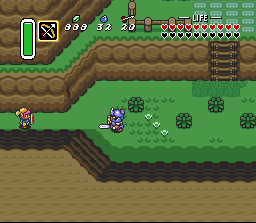
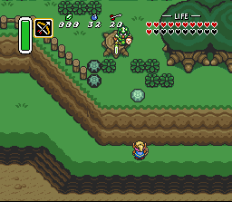
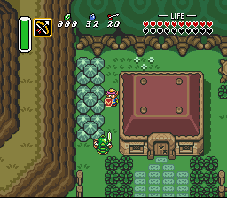
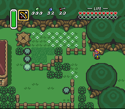
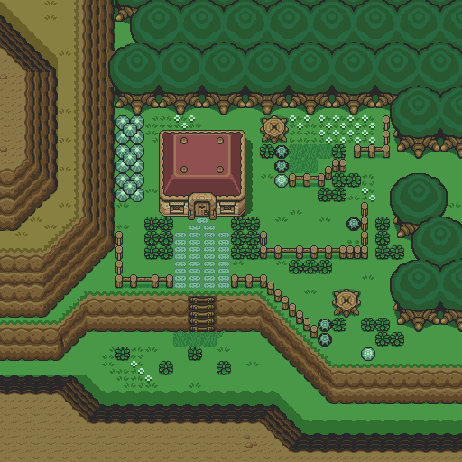

Zelda 3 Challenge - Screen Shots - Batch 1
These are the oldest screen shots...
Here's a memorable picture of the first time I ever changed a whole playing field. The boring "pattern grass" and wall of bushes were intentional, for testing reasons.

Private property? Place your bets now...

Tree stumped; I couldn't change the enemy location data yet...

You sure you won't accept a bribe?

Someone sure wanted to protect that flower garden...

This is the entire playing field.
These are only "practice" and will not be included in the finalized game.
Questions? Ideas? Suggestions?
Write to me!
Return to Zelda3C's main page
This site is not affiliated with nor endorsed by Nintendo in any way.